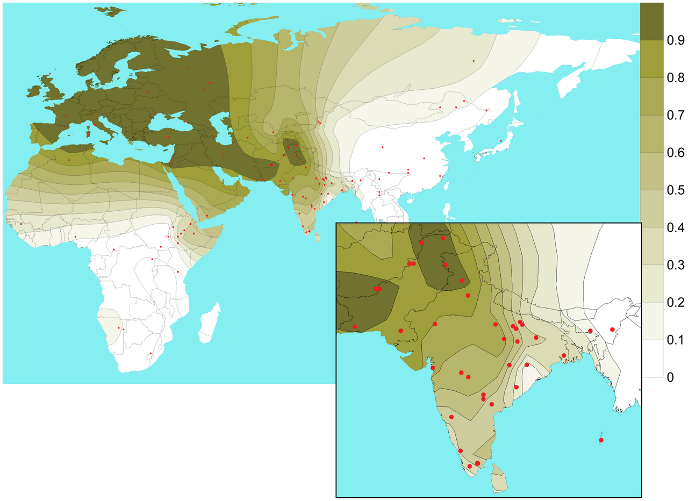

Part A · The biological system · Page 6 of 13
Populations I: allele frequencies and Hardy–Weinberg equilibrium
The earlier pages followed DNA inside one person and one family. Statistical genetics works with thousands of people at once. This page shows how a group of people is summarized at one SNP by a single number, the allele frequency (the fraction of all copies of the SNP that carry a given allele); how genotype frequencies follow from it when people choose partners independently of their genotypes (Hardy–Weinberg equilibrium); and how departures from that rule become the quality-control (QC) checks of the Session 1 practical that accompanies Lecture 2.
One number per SNP, and two independent draws
At a biallelic SNP, a population is summarized by one number: the allele frequency p (and q = 1 − p). Under random mating, a person’s two alleles are two independent draws from the population’s pool of alleles, so genotypes occur with frequencies p², 2pq and q². The number of copies of an allele a person carries is Binomial(2, p).
- Count alleles, not people. n people carry 2n copies of an autosomal SNP, and an allele frequency is (copies of that allele) / 2n. In the genotype matrix, a SNP column’s mean is 2 × the frequency of the counted allele.
- Hardy–Weinberg equilibrium (HWE). Under random mating, genotype frequencies follow from the allele frequency alone: p², 2pq, q².
- Deviations carry information. Too few or too many heterozygotes point to genotyping errors, mixed populations or related parents, so QC tests every SNP for HWE and every person for heterozygosity.
- Most variant sites are rare, but most of the variants in one genome are common. This decides which variants arrays, GWAS and sequencing can study.
- Frequencies differ between populations through genetic drift, founder effects, natural selection, migration and mutation.
Populations and samples Core
In genetics, a population is a group of people who mostly have children with one another, usually because they live in the same region or share recent ancestors. People in the same population therefore tend to carry the same alleles in similar proportions. Populations have no sharp boundaries: allele frequencies usually change gradually with geography instead of jumping at borders (Lecture 2, slides 89–91; Populations III).1
In a data set, "the population" is whichever group was sampled and named: for example the 503 genomes that the 1000 Genomes Project groups into its EUR super-population, the 766 people genotyped for MTHFR on Lecture 2 slide 74, or the 488,377 genotyped UK Biobank participants.2,3,4 A frequency always belongs to a named population.
The allele frequency of an allele is the fraction of all copies of a locus in a population that carry that allele. It is a property of the population. A study sees only a sample, so the number it reports is an estimate, written p ("p-hat"), and it has sampling error. With n unrelated people the sample holds 2n allele copies, and if genotypes follow Hardy–Weinberg proportions (below), the standard error of p is √(p(1 − p) / 2n). For the MTHFR sample (n = 766, estimated frequency of T 0.336) this is 0.012; for 488,377 UK Biobank participants it would be about 0.0005.
Rare alleles are measured poorly in small samples. An allele with frequency 0.5% is expected to appear only 10 times among the 2,000 allele copies of 1,000 people, and in a sample of 100 people (200 copies) there is a 37% chance that it does not appear at all.
Counting genotypes and alleles Core
Lecture 2 (slides 72–79) sets up notation for the counts in a sample of n people at one locus whose alleles are numbered 1, 2, …, K. This page uses it unchanged:
- nij = the number of people with genotype ij, that is, one copy of allele i and one copy of allele j (nij and nji are the same people). n = Σ nij is the number of people.
- Pij = nij / n is the genotype frequency: the fraction of people with genotype ij.
- pi = (2nii + Σj≠i nij) / (2n) is the allele frequency of allele i: each homozygote ii carries two copies of allele i, each heterozygote ij carries one, and 2n is the number of allele copies (slide 75). The numerator, the number of copies of the allele, is its allele count.
| Genotype | People nij | Genotype frequency Pij = nij / n | Copies of C | Copies of T |
|---|---|---|---|---|
| n11 = nCC | 334 | 0.436 | 2 × 334 = 668 | 0 |
| n12 = nCT | 350 | 0.457 | 350 | 350 |
| n22 = nTT | 82 | 0.107 | 0 | 2 × 82 = 164 |
| Total | n = 766 | 1.000 | 1,018 | 514 |
| Allele frequency = copies / 2n, with 2n = 1,532 | p = pC = 0.664 | q = pT = 0.336 | ||
The same formula works for loci with more than two alleles. For the ABO blood-group locus on slides 73 and 76 (n = 3,117 people, alleles O, A and B; 6,234 allele copies), pO = (2 × 1,168 + 1,080 + 377) / 6,234 = 0.608, pA = (2 × 262 + 1,080 + 186) / 6,234 = 0.287 and pB = (2 × 44 + 377 + 186) / 6,234 = 0.104. The three add up to 1.5
p, q and the minor allele frequency
Most SNPs are biallelic, so Lecture 2 writes p = p1 and q = p2 = 1 − p (slide 78). In the MTHFR example allele 1 is C, so p = 0.664 and q = 0.336. Which allele is called "1" is a convention, so a value of p means nothing until you say which allele it refers to. Slide 78 adds that p often denotes the minor allele, the less common allele in the population; its frequency is the minor allele frequency, MAF = min(p, q), which is never above 0.5. For MTHFR C677T in this sample, T is the minor allele and MAF = 0.336.
The "N" for genotypes and for alleles
A sample of n people has n genotypes but 2n allele copies at an autosomal locus (slide 79). Mixing the two up halves or doubles frequencies and standard errors. On the X chromosome, males carry one copy (they are hemizygous), so f females and m males carry 2f + m copies; software handles the X chromosome separately for this reason.
Hardy–Weinberg equilibrium Core
Random mating at a SNP means that people’s genotypes at that SNP do not influence who has children with whom. A child receives one allele from an egg and one from a sperm. Under random mating these two alleles are independent draws from the population’s pool of alleles, so with P(C) = p and P(T) = q:
P11 = P(CC) = p · p = p² · P12 = P(CT or TC) = pq + qp = 2pq · P22 = P(TT) = q²
These are the Hardy–Weinberg proportions, derived independently by Godfrey Hardy and Wilhelm Weinberg in 1908 (slide 81).7 In statistical terms, the number of copies of allele 1 in a person follows a Binomial(2, p) distribution; with K alleles the numbers of copies of alleles 1, …, K in a person follow a Multinomial(2; p1, …, pK) distribution, so Pii = pi² and Pij = 2pipj for i ≠ j (slide 82). A population whose genotype frequencies equal these values is in Hardy–Weinberg equilibrium (HWE).
Formally, HWE holds under these assumptions (slide 81): random mating; an infinitely large population; discrete generations; equal allele frequencies in males and females; and no mutation, migration or selection. Real populations break all of them slightly, yet for a well-genotyped SNP in a sample from one population HWE is often a good approximation.
Two consequences matter later:
- Equilibrium is reached in one generation. Whatever the parents’ genotype frequencies, if both sexes have allele frequency p, the children have genotype frequencies p², 2pq and q² (figure above). The allele frequency does not change: the children carry allele 1 with frequency p² + ½ · 2pq = p(p + q) = p. Without mutation, migration, selection or chance, nothing changes in later generations; hence "equilibrium".
- A rare allele sits almost entirely in heterozygotes. Of all copies of allele 2, the fraction carried by heterozygotes is 2pq / (2pq + 2q²) = p. If q = 0.01, then 99% of the copies are in heterozygotes and only 1 person in 10,000 is homozygous (q² = 0.0001). This is why carriers of recessive disease alleles far outnumber affected people (Inheritance), and why studies of rare variants see almost only heterozygous carriers.
Testing HWE, and what deviations mean Core
A test of HWE asks whether observed genotype counts could plausibly come from Hardy–Weinberg proportions. It uses the sample’s own allele frequency, p = (2n11 + n12) / 2n, to compute the expected counts:
E11 = n p² · E12 = 2n p q · E22 = n q²
Pearson’s statistic X² = Σ (O − E)² / E then has 1 degree of freedom: three genotype classes, minus one because the counts add up to n, minus one because p was estimated from the same counts. The p-value is P(χ²1 ≥ X²). For a biallelic SNP the statistic has a compact form, X² = n F², where F = 1 − (observed heterozygote fraction) / (2pq) is the relative shortfall of heterozygotes. So the test asks one question: are there too few or too many heterozygotes?
When the minor allele is rare, the expected counts are small and the chi-square approximation becomes unreliable. The exact test of Wigginton, Cutler and Abecasis computes the probability of every possible number of heterozygotes given the allele counts; it is the test PLINK reports.6,8
Worked example (MTHFR, slide 74). p = 0.664 gives expected counts 338.2 (CC), 341.5 (CT) and 86.2 (TT), against 334, 350 and 82 observed. X² = 0.47 with 1 df, p = 0.49 (exact test p = 0.52). The observed heterozygote fraction, 0.457, is close to the expected 2pq = 0.446: no evidence against HWE.
Why genotype counts deviate from HWE
| Cause | What happens | Signature | Usual response |
|---|---|---|---|
| Genotyping error | Genotypes are called by grouping each person’s measured signals into three clusters (From a blood sample to genotypes). Overlapping clusters move some heterozygotes into a homozygous class; a nearby variant or a deletion can hide one allele. | Usually too few heterozygotes, at that SNP only | Remove the SNP |
| Duplicated sequence | The assay also reads a second, nearly identical copy of the sequence elsewhere in the genome. | Too many heterozygotes | Remove the SNP |
| Population structure | The sample pools groups with different allele frequencies (Wahlund effect, below). | Too few heterozygotes at SNPs whose frequencies differ between the groups | Run QC within groups of genetically similar people; account for ancestry in association tests |
| Inbreeding | Related parents can each pass on a copy of the same allele inherited from a shared ancestor, so their children are homozygous more often. | Too few heterozygotes across the whole genome of one person | Per-person heterozygosity check (next section) |
| Selection or true association | A genotype affects survival, or the sample was selected for a trait the SNP affects (cases of a disease). | Deviation in cases but not in controls | Test HWE in controls; use a laxer threshold in cases |
| Chance | Among one million SNPs in HWE, about 1,000 have p < 0.001. | Mild deviations, scattered | Use a stringent threshold |
QC protocols remove SNPs whose HWE p-value falls below a stringent threshold. Published choices include p < 10−5 in controls (Anderson et al. 2010) and p < 10−6 in controls or for quantitative traits, with p < 10−10 in cases (Marees et al. 2018).9,10 The threshold for cases is laxer because a SNP associated with the disease can genuinely depart from HWE among cases (slide 83); PLINK 1.9’s --hwe filter ignores cases by default.6 UK Biobank’s central QC tested every marker in every genotyping batch for HWE (along with batch, plate, sex and array effects) and set the marker’s calls in that batch to missing when a test gave P < 10−12. To limit the effect of population structure, these tests used the 463,844 participants whose genotypes placed them close to the 1000 Genomes CEU samples (the paper calls them "European ancestry").4
Big samples detect tiny deviations. Because X² = nF², a 1% shortfall of heterozygotes (F = 0.01) gives X² = 0.1 (p = 0.75) in 1,000 people but X² = 50 (p ≈ 1.5 × 10−12) in 500,000 people. At biobank scale, look at the size of a deviation, not only at its p-value.
Mixing populations: the Wahlund effect
If a sample pools people from groups with different allele frequencies, it contains fewer heterozygotes than Hardy–Weinberg proportions predict from the pooled frequency, even when every group is in HWE on its own. This is the Wahlund effect. The shortfall equals 2 · Var(q), where Var(q) is the variance of the allele frequency across the groups (weighted by group size), and the resulting F equals Var(q) / (q(1 − q)), the quantity population geneticists call FST.11
The Wahlund effect is one reason QC is usually run within groups of genetically similar people. It is also a first view of population structure: rows of the genotype matrix that come from different groups differ systematically at thousands of SNPs at once (Populations III).
Heterozygosity Core
Heterozygosity is the fraction of genotypes that are heterozygous. It is used in two ways:
- Across people, at one SNP: the fraction of people who are heterozygous. Under HWE the expected heterozygosity is 2pq, at most 0.5 (when p = 0.5). Averaged over many SNPs it measures a population’s genetic diversity; genomes from the African populations of the 1000 Genomes Project carry the most variant sites (slide 93).13
- Across SNPs, in one person: the heterozygosity rate, the number of heterozygous genotypes divided by the number of non-missing genotypes. It is a per-sample QC metric.
The inbreeding coefficient F of a person is the probability that their two alleles at a locus are copies of the same allele in a recent common ancestor of their parents (identical by descent). It equals the kinship coefficient of the parents: 1/16 = 0.0625 for a child of first cousins, and about 0 for a child of unrelated parents.11,14 From genotype data, F is estimated by comparing a person’s homozygosity with its HWE expectation. PLINK’s --het computes
F = (O(HOM) − E(HOM)) / (N(NM) − E(HOM))
where O(HOM) is the observed number of homozygous genotypes, E(HOM) the number expected under HWE from the allele frequencies, and N(NM) the number of non-missing genotypes used.6 F is close to 0 for most people; F > 0 means more homozygous genotypes than expected, F < 0 more heterozygous ones.
Why QC looks at heterozygosity (Session 1 practical step "check heterozygosity across samples"):
- Too high: DNA from two people mixed in one sample (contamination) creates heterozygous calls wherever the two people differ.
- Too low: the parents are related (consanguinity), or poor-quality DNA makes heterozygotes hard to call.
- Not an error: heterozygosity also differs with ancestry, because populations differ in genetic diversity, and F computed with allele frequencies from a different population is biased. Compute it within groups of genetically similar people, or adjust for ancestry.
A common rule removes samples whose heterozygosity rate lies more than 3 standard deviations from the sample mean.9,10 UK Biobank adjusted each participant’s heterozygosity for ancestry by regression on the first six principal components, then flagged 968 participants with unusually high heterozygosity or more than 5% missing genotypes.4,15
The allele frequency spectrum Core
The allele frequency spectrum (also called the site frequency spectrum) is the distribution of allele frequencies across all variant sites in a sample: how many sites have a minor allele frequency of 0.1%, 1%, 10%, and so on. By convention, a variant is common if its MAF is at least 5%, low-frequency if its MAF is between 1% and 5%, and rare if its MAF is below 1%; Lecture 2 (slide 88) uses the rare (MAF < 1%) and common (MAF > 5%) cut-offs. Some studies, including the 1000 Genomes Project, draw the rare line at 0.5%.
Two facts look contradictory, yet both are true (slide 88):
- Most variant sites are rare. Among the 2,504 genomes of the 1000 Genomes Project, about 64 million autosomal variants have frequency below 0.5%, 12 million have 0.5–5%, and only 8 million have more than 5%.13
- Most of the variants in any one genome are common. A typical genome differs from the reference genome at 4.1 to 5.0 million sites, and only 40,000 to 200,000 of them (1–4%) are variants with frequency below 0.5%.13
The reason is the HWE arithmetic above. A person carries at least one copy of an allele with frequency f with probability 1 − (1 − f)², which is about 2f when f is small. An allele with f = 0.001 is carried by 0.2% of people; one with f = 0.3 by 51%. Each common site therefore turns up in hundreds of times more genomes than each rare site, which outweighs the much larger number of rare sites. Rare variants are so numerous because the human population grew explosively in recent history (by at least a factor of 1,000 over the past 400 generations, roughly 10,000 years), so many recent mutations exist in only a few copies.16
Why this matters for the rest of the course:
- Arrays and GWAS target common variants. Genotyping arrays and imputation capture mostly common variation, and a GWAS has power mainly for common variants (Session 2).
- Rare variants need sequencing and aggregate tests. They have to be read directly by exome or genome sequencing, and because each one is carried by few people, they are usually tested together, gene by gene (Session 7).
- MAF filters. QC usually drops very rare variants before a single-variant GWAS; Anderson et al. (2010) describe a MAF threshold of 1–2% as typical, higher in small studies, and PLINK’s
--mafuses 0.01 unless told otherwise.6,9 - Polymorphic or monomorphic? A site is polymorphic in a sample if more than one allele is observed there, and monomorphic if only one is. A SNP put on an array because it varies in one population can be monomorphic in another: the rs671 A allele was not seen in any of the 1000 Genomes EUR or SAS samples.2
Why allele frequencies differ between populations Core
Allele frequencies change from generation to generation. Populations that have been apart for many generations accumulate different frequencies, which is why frequencies usually change gradually with geography (slides 89–91 and the map below). Lecture 2 (slide 97) lists the forces: drift; migration, isolation, bottlenecks and founder effects; selection; non-random mating; and mutation. Non-random mating changes genotype frequencies rather than allele frequencies (see the HWE section); the other forces are described below.

Genetic drift
Each generation passes on only a finite sample of the parents’ alleles, so allele frequencies change at random. This is genetic drift. In the simplest model (Wright–Fisher), the 2N allele copies of the next generation of N people are a binomial sample from the current frequency, so the frequency changes by about √(pq / 2N) per generation (one standard deviation).11 Drift is fast in small populations and slow in large ones, and given enough time it ends with the allele lost (frequency 0) or fixed (frequency 1).
Founder effects and bottlenecks
A founder effect occurs when a new population is started by a small group whose allele frequencies differ, by chance, from those of the population they came from. A population bottleneck is a period when a population is very small; it has the same effect and also loses many rare alleles, which reduces diversity. Example: three variants in BRCA1 and BRCA2, the breast-cancer genes on Lecture 2 slide 19, are rare in most populations, yet 120 of 5,318 Jewish people tested in one study (about 2%) carried one of them, and the authors estimated that over 2% of Ashkenazi Jews do.19 The dispersal of modern humans out of Africa involved a series of founder events, which is why genetic diversity is highest in African populations (slide 93; Populations III).
Natural selection
When an allele changes the chance of surviving and having children in a particular environment, its frequency tends to rise or fall in that environment. This is natural selection. Three well-studied human examples are in the figure at the end of this section:
- Lactase persistence (positive selection). Lactase is the enzyme that digests lactose, the sugar in milk. Most mammals, and many people, stop making it after early childhood; people who keep making it as adults have lactase persistence. In studies of people from Europe the trait is strongly associated with the A allele of rs4988235 (written −13910*T on the gene’s strand; first shown in Finnish families), a regulatory variant about 14 kb upstream of the lactase gene LCT.20,21 The allele became common in populations that kept dairy animals:22 its frequency is 0.51 in the 1000 Genomes EUR samples and 0 in EAS.2 Other variants near LCT produce lactase persistence in some livestock-herding (pastoralist) populations in Africa.21
- Sickle cell trait and malaria (balancing selection). People with one copy of the sickle allele (HbS, rs334) have sickle cell trait, which protected Kenyan children almost 90% against severe malaria in one study, while people with two copies have sickle cell disease.23 Where malaria is common, heterozygotes therefore leave the most children, and both alleles persist: balancing selection, here through heterozygote advantage. HbS is most common where malaria has long been widespread, above all in sub-Saharan Africa;24 its frequency in the 1000 Genomes AFR samples is 0.10.2 Lesk (Box 1.5) describes a similar malaria link for G6PD deficiency.22
- Duffy-null and vivax malaria. The C allele of rs2814778 switches off production of the Duffy blood-group protein on red blood cells,25 and people with two copies are resistant to Plasmodium vivax malaria.26 The allele is close to fixation in many African populations (0.96 in AFR) and rare elsewhere (0.08 in AMR, at most 0.006 in EAS, EUR and SAS).2 It also lowers neutrophil counts (one type of white blood cell),27 which matters when blood-count traits are analyzed.
Gene flow and mutation
Gene flow (people moving between populations and having children in the new one) mixes allele pools and pulls frequencies together. Populations with recent ancestry from several continents have intermediate frequencies: in the 1000 Genomes AMR samples, collected in the Americas, rs2814778-C has frequency 0.078, between AFR (0.964) and EUR (0.006).2 Mutation creates new alleles. Per-site mutation rates are so low that mutation changes allele frequencies very slowly, but it is the source of all variation, and most rare variants are recent mutations (Genetic variation).
Five running examples across five super-populations
Three lessons for analysis:
- Some variants matter only in some populations. A GWAS of alcohol-related traits in people genetically similar to the 1000 Genomes EUR samples cannot detect rs671, which is absent or extremely rare in them (0 of 1,006 EUR chromosomes in 1000 Genomes2); samples that include people genetically similar to the EAS samples are needed (Populations III).
- Frequency filters act differently. A MAF ≥ 1% filter keeps rs334 in the AFR samples and drops it in all the others.
- Frequency differences can look like associations. If a trait differs between groups for non-genetic reasons, any SNP whose frequency differs between those groups will appear associated with the trait. This is population stratification, a form of confounding treated in Populations III.
Check your understanding
In 1,000 people, 640 are CC, 320 are CT and 40 are TT. What are p (for C) and q (for T), and is the SNP in HWE?
p = (2 × 640 + 320) / 2,000 = 0.8 and q = 0.2. Expected counts are 1,000 × 0.64 = 640, 1,000 × 0.32 = 320 and 1,000 × 0.04 = 40, exactly what was observed: X² = 0, perfect Hardy–Weinberg proportions. The minor allele is T, MAF = 0.2.
Why does the chi-square test of HWE at a SNP have 1 degree of freedom, not 2?
There are three genotype classes. One degree of freedom is lost because the counts must add up to n, and another because the allele frequency used for the expected counts was estimated from the same data. 3 − 1 − 1 = 1.
In controls, a SNP has 900 CC, 20 CT and 80 TT. What do you conclude?
p(C) = (1,800 + 20) / 2,000 = 0.91, so HWE predicts 2 × 0.91 × 0.09 × 1,000 ≈ 164 heterozygotes and about 8 TT, but only 20 CT and 80 TT were seen. F = 1 − 20/163.8 ≈ 0.88 and X² = nF² ≈ 770, so the p-value is far below any QC threshold. A shortfall this large at a single SNP in controls points to a genotyping problem (for example heterozygotes called as homozygotes); QC removes the SNP.
Two equal-sized groups, each in HWE, have freq(T) = 0.2 and 0.8. You pool them. What heterozygote fraction do you observe, and what does HWE predict?
Each group has 2 × 0.2 × 0.8 = 0.32 heterozygotes, so the pooled sample has 0.32. The pooled frequency is 0.5, for which HWE predicts 0.5. The shortfall, 0.18, equals 2 × Var(q) = 2 × 0.3² (Wahlund effect), and F = 0.09 / 0.25 = 0.36.
PLINK --het gives F = 0.12 for one participant and F = −0.25 for another. How would you interpret them?
F = 0.12 means more homozygous genotypes than expected: possible related parents (more closely than first cousins, for whom F ≈ 0.0625), poor DNA quality, or allele frequencies taken from a population that does not match the person’s ancestry. F = −0.25 means far too many heterozygous genotypes, the typical sign of a sample contaminated with a second person’s DNA. Check missingness and ancestry, and exclude outliers.
Most variant sites in the 1000 Genomes catalog are rare, yet only 1–4% of the variants in a typical genome are rare. How can both be true?
A person carries an allele of frequency f with probability about 2f when f is small. Each rare site is therefore present in very few genomes, while each common site is present in a large fraction of genomes. Summed over sites, the 8 million common sites contribute far more variants per genome than the 64 million rare sites.
Learn more
- The Hardy–Weinberg equilibrium · Khan Academy intro — the p² + 2pq + q² rule with worked examples.
- Talking Glossary: Genetic drift and Founder effect · NHGRI intro — short definitions with narrated explanations.
- Population and Quantitative Genetics · Graham Coop, UC Davis (free book, CC BY) intermediate — HWE, inbreeding, the Wahlund effect, FST and drift, with derivations.
- PLINK 1.9: basic statistics · cog-genomics.org intermediate — what
--freq,--hardyand--hetcompute. - GWAS QC tutorial with data and scripts · Marees et al. 2018, GitHub intermediate — runs the HWE, MAF and heterozygosity filters step by step in PLINK.
- Data quality control in genetic case-control association studies · Anderson et al. 2010, Nature Protocols intermediate — the classic QC protocol, including heterozygosity-by-missingness plots.
- Ensembl population genetics view for rs4988235 · Ensembl intro — allele and genotype frequencies per population; change the rsID to explore any variant.
- gnomAD browser · Broad Institute intro — allele frequencies from hundreds of thousands of exomes and genomes, by genetic-ancestry group.
- A global reference for human genetic variation · 1000 Genomes Project Consortium 2015, Nature intermediate — where the allele frequency spectrum numbers on this page come from.
- A note on exact tests of Hardy–Weinberg equilibrium · Wigginton et al. 2005, AJHG advanced — the exact test used by PLINK and by the widget above.
Sources for this page
- DCEG Statistical Genetics course, Lecture 2: “Next Generation Statistical Methods for Genome-Wide Association Studies: Course Overview and Intro” (9 September 2026), slides 8, 19, 72–83, 88–93 and 97.
- Ensembl release 116, Variation REST API: 1000 Genomes phase 3 super-population allele frequencies for rs671, rs4988235, rs2814778, rs334, rs1801133 and rs1426654 (AFR n = 661, AMR 347, EAS 504, EUR 503, SAS 489 people), retrieved October 2026. example query
- Han J, Colditz GA, Hunter DJ (2007). Polymorphisms in the MTHFR and VDR genes and skin cancer risk. Carcinogenesis 28:390–397. Cited on Lecture 2 slides 74 and 77 as the source of the MTHFR counts. doi
- Bycroft C, Freeman C, Petkova D, et al. (2018). The UK Biobank resource with deep phenotyping and genomic data. Nature 562:203–209 (488,377 genotyped participants; marker tests set to missing at P < 10−12; heterozygosity adjusted for six principal components; 968 outlier samples). doi
- Wolpin BM, Kraft P, Gross M, et al. (2010). Pancreatic cancer risk and ABO blood group alleles: results from the Pancreatic Cancer Cohort Consortium. Cancer Research 70:1015–1023. Source of the ABO counts on slides 73 and 76. doi
- PLINK 1.9 documentation: file formats (
.frq,.hwe,.het) and filters (--hwe,--maf); PLINK 2.0.afreqformat. formats · filters · PLINK 2 formats. Chang CC, Chow CC, Tellier LC, et al. (2015). Second-generation PLINK. GigaScience 4:7. doi - Hardy GH (1908). Mendelian proportions in a mixed population. Science 28:49–50. doi
- Wigginton JE, Cutler DJ, Abecasis GR (2005). A note on exact tests of Hardy–Weinberg equilibrium. American Journal of Human Genetics 76:887–893. doi
- Anderson CA, Pettersson FH, Clarke GM, Cardon LR, Morris AP, Zondervan KT (2010). Data quality control in genetic case-control association studies. Nature Protocols 5:1564–1573. doi
- Marees AT, de Kluiver H, Stringer S, et al. (2018). A tutorial on conducting genome-wide association studies: quality control and statistical analysis. International Journal of Methods in Psychiatric Research 27:e1608. doi
- Coop G. Population and Quantitative Genetics (lecture notes, University of California, Davis; CC BY 3.0): Hardy–Weinberg proportions, inbreeding coefficients, the Wahlund effect and FST, genetic drift as binomial sampling of 2N alleles. github.com/cooplab/popgen-notes
- DCEG Statistical Genetics Workshop. Session 1: Introduction, practical (PLINK QC on the PennCATH data: missingness, Hardy–Weinberg equilibrium, heterozygosity, IBD, PCA). workshop page
- The 1000 Genomes Project Consortium (2015). A global reference for human genetic variation. Nature 526:68–74 (2,504 genomes from 26 populations; ~64 million autosomal variants with frequency < 0.5%, ~12 million 0.5–5%, ~8 million > 5%; a typical genome differs from the reference at 4.1–5.0 million sites, of which 40,000–200,000 have frequency < 0.5%). doi
- Manichaikul A, Mychaleckyj JC, Rich SS, Daly K, Sale M, Chen WM (2010). Robust relationship inference in genome-wide association studies. Bioinformatics 26:2867–2873 (kinship coefficient 1/16 for first cousins). doi
- UK Biobank Data Showcase, data-fields 22003 (Heterozygosity), 22004 (Heterozygosity, PCA corrected), 22005 (Missingness) and 22027 (Outliers for heterozygosity or missing rate; 968 participants). field 22027
- Keinan A, Clark AG (2012). Recent explosive human population growth has resulted in an excess of rare genetic variants. Science 336:740–743. doi
- Marth GT, Yu F, Indap AR, et al. (2011). The functional spectrum of low-frequency coding variation. Genome Biology 12:R84 (allele frequency spectrum on Lecture 2 slide 88). doi
- Basu Mallick C, Iliescu FM, Möls M, et al. (2013). The light skin allele of SLC24A5 in South Asians and Europeans shares identity by descent. PLoS Genetics 9:e1003912 (Figure 2: isofrequency map of the rs1426654-A allele from 2,763 published and 1,446 new samples; CC BY). doi · image via Wikimedia Commons (CC BY 2.5)
- Struewing JP, Hartge P, Wacholder S, et al. (1997). The risk of cancer associated with specific mutations of BRCA1 and BRCA2 among Ashkenazi Jews. New England Journal of Medicine 336:1401–1408 (120 carriers among 5,318 people tested). doi
- Enattah NS, Sahi T, Savilahti E, Terwilliger JD, Peltonen L, Järvelä I (2002). Identification of a variant associated with adult-type hypolactasia. Nature Genetics 30:233–237. doi
- Tishkoff SA, Reed FA, Ranciaro A, et al. (2007). Convergent adaptation of human lactase persistence in Africa and Europe. Nature Genetics 39:31–40. doi
- Lesk AM (2017). Introduction to Genomics, 3rd ed. Oxford University Press. Chapter 1: “Populations”, the key point on lactose tolerance, and Box 1.5 (G6PD deficiency and malaria).
- Williams TN, Mwangi TW, Wambua S, et al. (2005). Sickle cell trait and the risk of Plasmodium falciparum malaria and other childhood diseases. Journal of Infectious Diseases 192:178–186. doi
- Piel FB, Patil AP, Howes RE, et al. (2010). Global distribution of the sickle cell gene and geographical confirmation of the malaria hypothesis. Nature Communications 1:104. doi
- Tournamille C, Colin Y, Cartron JP, Le Van Kim C (1995). Disruption of a GATA motif in the Duffy gene promoter abolishes erythroid gene expression in Duffy-negative individuals. Nature Genetics 10:224–228. doi
- Miller LH, Mason SJ, Clyde DF, McGinniss MH (1976). The resistance factor to Plasmodium vivax in blacks: the Duffy-blood-group genotype, FyFy. New England Journal of Medicine 295:302–304 (title as published). doi
- Reich D, Nalls MA, Kao WHL, et al. (2009). Reduced neutrophil count in people of African descent is due to a regulatory variant in the Duffy antigen receptor for chemokines gene. PLoS Genetics 5:e1000360. doi